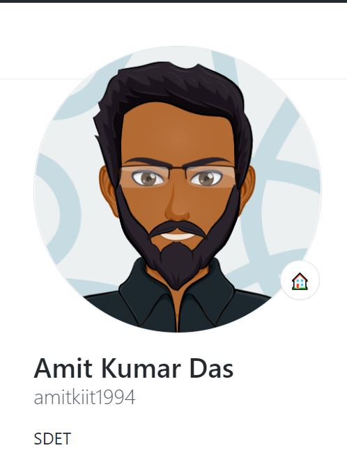

Hello there!
Welcome to My Space
"If you believe in yourself that you can achieve, then you have achieved it already, that's half battle won!"
Lets Grow Together!
GET TO KNOW ME!
Welcome to My Space
"If you believe in yourself that you can achieve, then you have achieved it already, that's half battle won!"
Lets Grow Together!
GET TO KNOW ME!Firstly! Warm welcome to my place!
I am an Engineering postgraduate, currently in Software Industry. My primary focus is bringing the best quality version of Software through means of Functional, Performance, and Automation Tests with a DevOps and Agile Mindset. I love my job to the core, finding bugs is one of my passion apart from coding. I try to keep myself updated with technology by keeping myself involved in tech communities, ed tech channels, etc. I am obsessed with learning the latest technologies. In my past time, I like to solve hackerank, work on my projects, gaming, guitaring,...
Currently, I am exploring Microsoft...
I specialize in Creating Test Bots, Containerization, Orchestration, Framework development, Test Architecting, Service virtualization, Cloud computing, etc.
All over, I am an experienced Software Development Engineer in Test (SDET) professional with a demonstrated history of Testing Web and Android applications.
"If I have to do a task more than twice I automate and If I have to explain a task more than twice I document"
Java | Selenium | Rest API Automation | Postman | Kubernetes | Docker | Maven | Testng | Log4j | Rest assured io | Cucumber | Karate | Oracle | MySQL | PostgreSQL | Unix | Shell scripting | Gatling | Git | HTML | CSS | Javascript | Jenkins | Jira | Azure Devops | Springboot | Specmatic (Mock Api) | Python | Apache Airflow | Influx | Grafana


Technology Consultant @ Microsoft
Questions or Comments?
Ping me or ask me a question using the form.
My Place: Kolkata, West Bengal
This is a static site built on HTML and css, feel free to view the repo below: 
It doesn't matter if we are SDE, SDET, SRE, PM, Tech Support or UX...in the end, if the product is successful in the market, we can proudly own it and say "I was part of the team and we made it happen." It all comes down to good coordination. As each and everyone of us is doing our best to digitally revolutionalize the century. So, whatever you are, be proud of your role.
P.S - Not always though, a lot of wise thinking needs to be done before deciding but once decided there's no looking back, you turn the decision in your favor and narrate your story.
Keep Growing
Some day when you look back you will realise that it was all worth it. Your Hardwork counts!
Being from a core engineering background, when I started my career as a software engineer, I did not have a choice and I was put into testing stream training.
Like everyone, a lot of things came into mind then:
1. Is there a future in Testing?
2. Will I be able to grow?
3. Am I gonna get paid less than the developers?
4. Will I be able to code?
5. Will I only be clicking and verifying UI all my life?
Today, when I look back I feel happy and blessed that these points did not count and I was able to prove myself wrong.
It doesn't matter what role you are in, if you choose to grow, there is no limit. Don't let a role or designation stop you from upskilling. We can continue to learn and grow in different fields irrespective of our day job. And when the time is right, we make the move.
You are always more capable than you expect yourself to be. Let's challenge and take a pledge to never stop growing!
Once in a interview, the interviewer humiliated me in the best way. I still remember he said "How have you come this far, you know nothing". Next day I cleared all the rounds of Paytm.
So it reaffirms that if you have faith in yourself, nothing can stop you.
P.S: Sometimes, I think all the companies should have their employees go through a separate learning process of how to take interviews, because in the course of searching for the right candidate or sometimes favorism they forget to respect the candidates.
I was seeing a movie called Intern, where a startup hired senior citizen as intern and it turned out unexpectedly in favor of them. I wish if this was real, I would love to see my father coding simultaneously with me.
Don't you think its a good idea?
Normally in Technical Interviews or Coding rounds, I used to talk less and silently code the problem statement and deal with challenges within me. But in the course of giving interviews, I have learnt that we need to be vocal about our thought process, because the interviewer doesn't know whats going in our mind. We need to walk them through every possiblities and difficulties that we are going through in the course of solving the problem statement. In this way I think we can have a better chance of getting selected.
If you know solution to the problem, there is no point in worrying and if you do not know the solution then worrying will only kill time, instead do something about it
So stop worrying and start acting.
Dreams aren't the ones that come in your sleep instead they are the ones that do not let you sleep
There was a batch of swimmers who were preparing for Olympic Selection Trials.
They used to swim everyday and train hard in a pool. There was a notice that said 'pool closes at 7pm', so everybody used to wrap up by 7pm except for one girl who used to sneak and stay back and used to swim for an extra hour. Guess what, that girl made it to Olympics.
Moral of the Story: If you want to stand out, then think out of the box and give that #extra effort
Seeing continuos success posts everyday on linkedin I started getting demotivated because of my repeated failures and rejection in Interviews. So I stepped forward today to share what happened before I got offers from #paytm , #ola, #jio and #microsoft.
These are the number of times I faced rejection within a span of 5 months:
+ Frontdoor - Rejected in technical round
+ Morgan Stanley - Rejected twice, once in technical 1 round, the other time in technical 2 round
+JP Morgan - Rejected in Telephonic screening
+ Ridecell - Rejected in code pairing of the given project, 4th round
+Testvagrant - Rejected after submitting the project
+ Cyware Labs - Rejected by hiring manager. No reason.
+ ZS Associates - Rejected in Technical 1 round
+ Eaton - Rejected in Technical 1 round
+ Arcesium - Rejected in Technical 2 round
+ Adobe - Rejected in Second round
+ Qualys - Rejected in Second round
+ Groupon - Rejected in live coding
+ Mastercard - Rejected in Technical 1 round
+ Dunzo - Rejected in Technical 1 round
+ Amazon - Rejected in Online Assessment
+ Anz bank - Rejected in Online Assessment
+ Grab - Rejected in Online Assessment
One thing that remained constant throughout was determination.
So this is to everyone out there who are in the journey of giving Interviews, just hang in there a little bit, because you are closer to the goal than you think.
There might be times when you think you have finally achieved your goal, yet you failed. For eg. You attempted all the rounds of an Interview & got rejected at Hiring manager round/HR round.
This doesn't mean a failure, this is actually a good example of a bad day. When you are in the journey of giving Interviews, you are going to face a concept which I say good days and bad days. Good days are typically when in an interview you are asked the basic or easiest questions and there, you get selected! But do not get surprised or feel strange because your bad day was compensated here.
So remember to leverage the advantage of good days. On a bad day, when you have given your best and even then you have been rejected, you should then apply to minimum 10 jobs that particular night. Trust me, one of the next in line will probably be your next company!
None of you hardwork is getting wasted. Every sweat counts.
One of the lessons I learned in college -
With no prior knowledge about the new lucrative dual degree program, I joined B.Tech+M.Tech with an investment of 5 years of dedicated time. However, in the 7th semester, we were given a choice to opt-out from the dual degree program and switch to B.Tech 4 year program. I wanted to grab this chance but couldn't because of 4 backlogs on my plate. Most of the companies didn't allow students with backlogs to appear for assessments. Guess what, except for 10 students the whole batch switched to the B.Tech 4 year program, eligible for placements that year, and most of them were placed in good companies. I couldn't. The only thing I did was congratulate everyone for their placements. And finally, after 1 year i.e. at the end of my 5th year, I was able to get an offer from one of the mass recruiters.
I never took engineering seriously, I would fail in most of the exams. My negligence to semester exams cost me a whole year. My batchmates have 2 more years of experience than me.
I understood the importance of learning & growing in my professional years. I decided not to look back and gave my best to get skilled. Better late than never but I paid for my negligence.
Failures are helpful but negligence is ought to be paid. Please do not take your college days for granted. Invest your time wisely!
What is the hardest part of Job hunting?
-> Preparations - No
-> Interviews - Maybe
-> Getting shortlisted - Yes! Definitely Yes.
How to get shortlisted?
1. Use resume keyword scanners: Yes, this is your first step, pick your latest resume, run a scan against your desired job description. Figure out the mismatch in skills and update accordingly.
2. Referrals: Yes, it is one of the approaches but you should refrain from requesting referrals like "Please refer me to your company." Instead, I suggest taking your time, identify the job requirements and job IDs you find yourself fit for, prepare a cover letter as to why you think you are a suitable match, help out the referrer with the job id, strike a conversation with the referrer where you pitch yourself the best way possible, Gain trust.
Why am I saying this? You have worked hard in your preparations, you just have to put that last mile of effort.
3. Approaching Recruiters/Hiring Managers: This is one of the best ways. But the question is do you stand out from the crowd? Identify the job requirements and their IDs you find yourself a fit for, start showing your proof of concepts/personal projects. Prepare a cover letter stating how you are the best fit, be presentable, engage in a good conversation, and build trust.
Do It Today!
+ Note down the skills you have now and update your resume accordingly.
+ Set a reminder on your calendar 3 months from today and label it as 'Skill Evaluation'.
+ After 3 months, evaluate your learning & skills you acquired within this period and then, update your resume again.
+ Compare both the resumes.
You will be amazed to find out how much you have grown in 3 months like working/exploring new technology, new domain, new Project, etc.
Do this activity on a recurring basis!
Develop a habit of updating your resume every once in a while to evaluate your progress. Resumes may not only be utilized for applying for jobs, you can use them for self-assessment too.
How do you think you should start job hunting?
+ Search for Jobs you want to apply for, and carefully go through the job descriptions. Identify the skills and technologies that are required, you will find that most of the things are similar across other job positions too. Understanding and upskilling to trending industry requirements is the most important aspect of job hunting.
+ Reserve time for the next 1-2 months, to go through all the techs and skills that you are missing. Once you have gained ample amount of knowledge, try to implement these as a part of POCs to your current project or maybe create personal projects so that you can showcase them to hiring managers.
+ Revise your already known skills thoroughly! Get your fundamentals right! In interviews, you might not want to say that 'I don't have that idea because other teams were handling that part', you might invest time in knowing every aspect of engineering the software goes through.
+ Voila, Go for Job Applications!
Note: This doesn't mean, you shouldn't go for interviews in the course of preparing because you never know when the time is right. Having this mentality to be interview ready always is the best thing, it's because opportunities may come by chance you don't wanna lose them. Always take the risk, there are two sides to risk either positive or negative, but the best part is you are gaining experience and that’s gonna remain constant throughout your journey.
Is (Testing == (Java || Selenium || UFT)) ?
That's what I believed in my initial days...
So what testing means to me now?
+ Testing the application with human intelligence
+ Finding as many bugs as possible so that customers can trust the software
+ To play like an end-user
+ Preparing automated bots that can do the task regressively, simultaneously, and can run endlessly in a loop.
+ Ensuring the software can run on all the supported platforms
+ Ensuring the software can run seamlessly handling any type of load
+ To take appropriate measures so that the software can be deployed effortlessly and seamlessly
+ Lastly, taking Ownership!
In the end, we should do our best so that we ensure only and only the best version of the software is released to the customer.
Brand name doesn't define work culture, growth opportunities, trending tech stacks, etc.
Do your homework thoroughly before joining an organization! You have worked hard in your interview preparations! You might not want to get trapped in an organization for the sake of a lucrative CTC or brand name and not getting what you want in your day-to-day life.
In the end, if you like your job => You are going to perform well =>You are going to bag great packages => Brand name won't matter => You lead the perfect life!
@BeforeHappyTimeline
=> Interview Preparations
=> Job Hunting
@HappyTimeline
=> Satisfactory Offer Letter
=> Serving Notice Period
=> First week at the new organization.
@AfterHappyTimeline
=> Joining Formalities
=> Struggling with new techs
=> Juggling between Knowledge Transitions